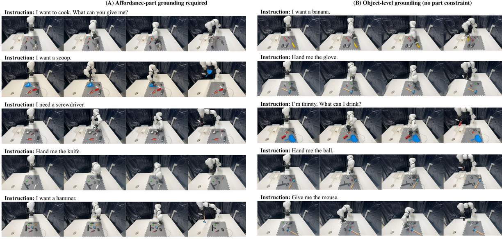

● SYSTEM ONLINE · AFFORDANCE REASONING
Affordance
Grasp-R1
Chain-of-Thought-Guided Multimodal Large Language Model with Reinforcement Learning for Affordance Grasping

REASONING READY MASK READY GRASP READY
SCROLL TO INSPECT ↓
01
SYSTEM ARCHITECTURE
Reasoning is the interface
between language and contact.
Affordance segmentation is crucial for bridging visual perception and robotic manipulation, yet existing Vision–Language Models (VLMs) struggle to align 3D object geometry with the semantic intent of complex grasping instructions due to limited structured reasoning capabilities. We introduce AffordanceGrasp-R1, a reasoning-driven affordance segmentation framework for robotic grasping that combines a chain-of-thought (CoT) cold-start strategy with reinforcement learning to enhance deduction and spatial grounding. In addition, we redesign the grasping pipeline to be more context-aware by generating grasp candidates from the global scene point cloud and subsequently filtering them using instruction-conditioned affordance masks. Extensive experiments demonstrate that AffordanceGrasp-R1 consistently outperforms state-of-the-art (SOTA) methods on benchmark datasets, and real-world robotic grasping evaluations further validate its robustness and generalization under complex language-conditioned manipulation scenarios.
FRAMEWORK / FIG.04FULL PIPELINE

Decode functional intent and emit precise spatial prompts.
TEXT + RGB → BOX + POINTTurn coarse prompts into a fine-grained affordance mask.
BOX + POINT → MASKPreserve global geometry and rank feasible 6-DoF candidates.
SCENE + MASK → POSE02
EXPERIMENTAL EVIDENCE
Broad gains.
Visible grounding.
METRICS / 8 SUBSETSOURS VS. AFFORDANCENET

QUALITATIVE / MAINFUNCTIONAL REGION

LANGUAGE / EASY + HARDSEMANTIC INTENT

03
REAL-WORLD ROBOT LAB
Ten objects.
Two language regimes.
CITATION.BIB
@article{zhou2026affordancegraspr1,
title = {AffordanceGrasp-R1: Chain-of-Thought-Guided Multimodal Large Language Model with Reinforcement Learning for Affordance Grasping},
author = {Zhou, Dingyi and He, Mu and Fang, Zhuowei and Yao, Xiangtong and Liu, Yinlong and Knoll, Alois and Cao, Hu},
journal = {arXiv preprint arXiv:2602.03547},
year = {2026}
}